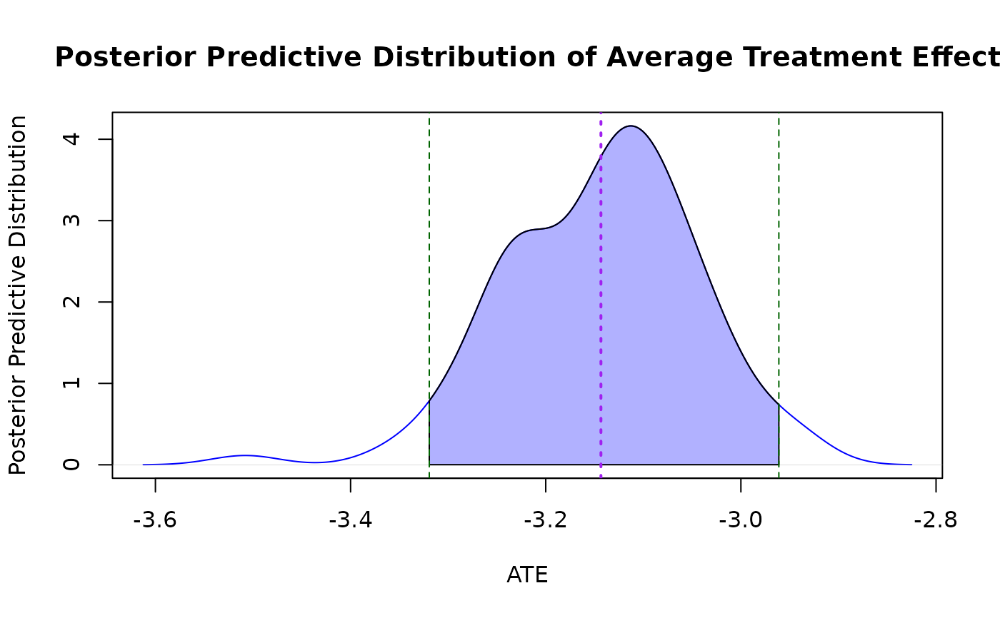

This function plots the density of ATE from bayesmsm output.
Usage
plot_ATE(
input,
ATE = "RD",
col_density = "blue",
fill_density = "lightblue",
main = "Posterior Predictive Distribution of Average Treatment Effect",
xlab = "ATE",
ylab = "Posterior Predictive Distribution",
xlim = NULL,
ylim = NULL,
...
)Arguments
- input
A model object, data frame or vector containing the bootstrap estimates of ATE.
- ATE
define causal estimand of interest from RD, OR, RR.
- col_density
Color for the density plot (default is "blue").
- fill_density
Fill color for the density plot (default is "lightblue").
- main
Title of the plot (default is "Density of ATE Estimates").
- xlab
X-axis label (default is "ATE").
- ylab
Y-axis label (default is "Density").
- xlim
Limits for the x-axis (default is NULL).
- ylim
Limits for the y-axis (default is NULL).
- ...
Additional graphical parameters passed to the plot function.
Value
A ggplot object representing the density plot for the posterior predictive distribution of the Average Treatment Effect (ATE).
Examples
# 1) Specify simple treatment‐assignment models
amodel <- list(
c("(Intercept)" = 0, "L1_1" = 0.5, "L2_1" = -0.5),
c("(Intercept)" = 0, "L1_2" = 0.5, "L2_2" = -0.5, "A_prev" = 0.3)
)
# 2) Specify a continuous‐outcome model
ymodel <- c("(Intercept)" = 0,
"A1" = 0.2,
"A2" = 0.3,
"L1_2" = 0.1,
"L2_2" = -0.1)
# 3) Simulate without right‐censoring
testdata <- simData(
n = 200,
n_visits = 2,
covariate_counts = c(2, 2),
amodel = amodel,
ymodel = ymodel,
y_type = "continuous",
right_censor = FALSE,
seed = 123)
model <- bayesmsm(ymodel = Y ~ A1 + A2,
nvisit = 2,
reference = c(rep(0,2)),
comparator = c(rep(1,2)),
treatment_effect_type = "sq",
family = "binomial",
data = testdata,
wmean = rep(1,200),
nboot = 10,
optim_method = "BFGS",
seed = 890123,
parallel = FALSE)
plot_ATE(model)
